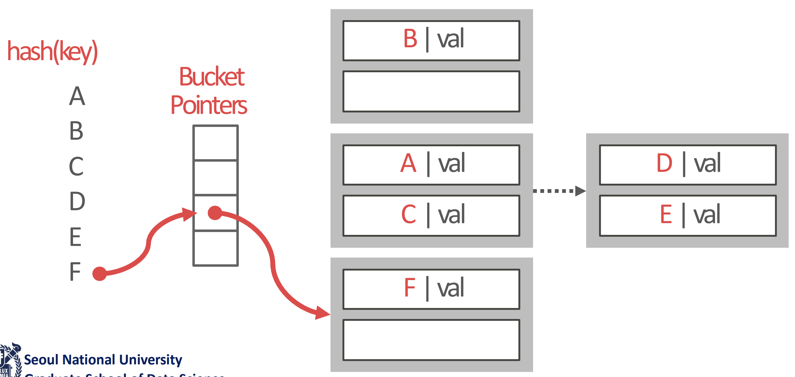
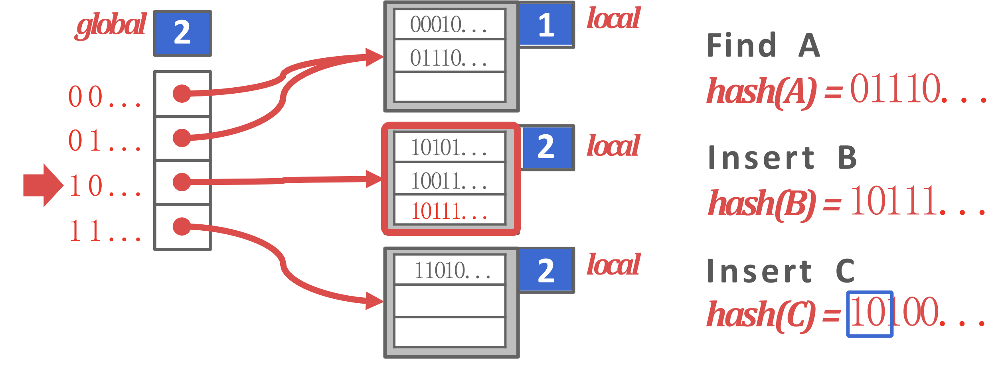
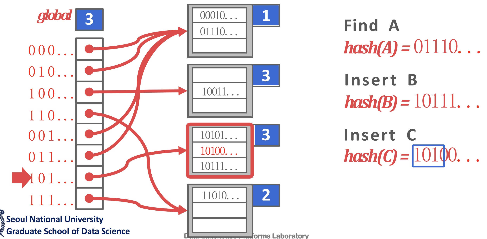
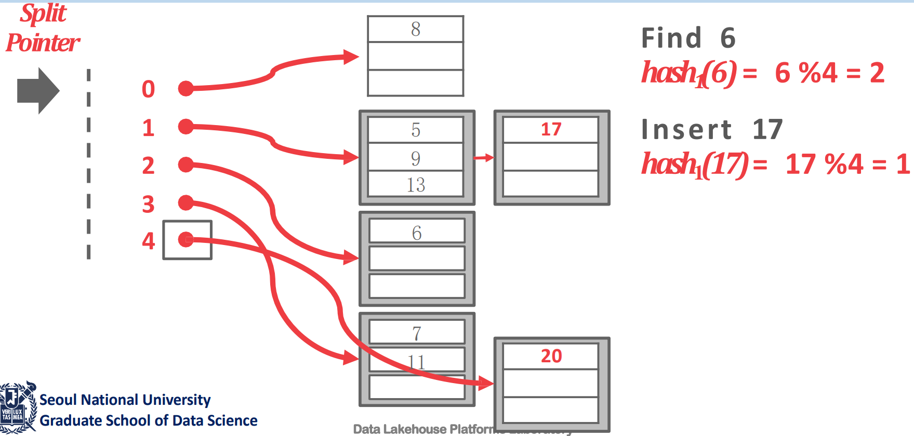

<!DOCTYPE html>
<html><head><title>08. Hash Tables (Part 2 - Dynamic Hash)</title><meta charSet="utf-8"/><meta name="viewport" content="width=device-width, initial-scale=1.0"/><meta property="og:title" content="08. Hash Tables (Part 2 - Dynamic Hash)"/><meta property="og:description" content="서울대학교 데이터사이언스대학원 정형수 교수님의 &amp;quot;데이터사이언스 응용을 위한 빅데이터 및 지식 관리 시스템&amp;quot; 강의를 필기한 내용입니다. 목차 Dynamic hashing scheme § Static hash 의 경우에는 key count 를 이미 알고 있어야 한다."/><meta property="og:image" content="https://mdg.haeramk.im/static/og-image.png"/><meta property="og:width" content="1200"/><meta property="og:height" content="675"/><link rel="icon" href="../../../../../static/icon.png"/><meta name="description" content="서울대학교 데이터사이언스대학원 정형수 교수님의 &amp;quot;데이터사이언스 응용을 위한 빅데이터 및 지식 관리 시스템&amp;quot; 강의를 필기한 내용입니다. 목차 Dynamic hashing scheme § Static hash 의 경우에는 key count 를 이미 알고 있어야 한다."/><meta name="generator" content="Quartz"/><link rel="preconnect" href="https://fonts.googleapis.com"/><link rel="preconnect" href="https://fonts.gstatic.com"/><link href="../../../../../index.css" rel="stylesheet" type="text/css" spa-preserve/><link href="https://cdn.jsdelivr.net/npm/katex@0.16.0/dist/katex.min.css" rel="stylesheet" type="text/css" spa-preserve/><link href="https://fonts.googleapis.com/css2?family=IBM Plex Mono&amp;family=Gowun Batang:wght@400;700&amp;family=Gowun Dodum:ital,wght@0,400;0,600;1,400;1,600&amp;display=swap" rel="stylesheet" type="text/css" spa-preserve/><script src="../../../../../prescript.js" type="application/javascript" spa-preserve></script><script type="application/javascript" spa-preserve>const fetchData = fetch(`../../../../../static/contentIndex.json`).then(data => data.json())</script></head><body data-slug="gardens/database/originals/bkms01.fall.2024.gsds.snu.ac.kr/lectures/08.-Hash-Tables-(Part-2---Dynamic-Hash)"><div id="quartz-root" class="page"><div id="quartz-body"><div class="left sidebar"><h1 class="page-title "><a href="../../../../..">Madison Digital Garden</a></h1><div class="spacer mobile-only"></div><div class="search "><div id="search-icon"><p>Search</p><div></div><svg tabIndex="0" aria-labelledby="title desc" role="img" xmlns="http://www.w3.org/2000/svg" viewBox="0 0 19.9 19.7"><title id="title">Search</title><desc id="desc">Search</desc><g class="search-path" fill="none"><path stroke-linecap="square" d="M18.5 18.3l-5.4-5.4"></path><circle cx="8" cy="8" r="7"></circle></g></svg></div><div id="search-container"><div id="search-space"><input autocomplete="off" id="search-bar" name="search" type="text" aria-label="Search for something" placeholder="Search for something"/><div id="results-container"></div></div></div></div><div class="darkmode "><input class="toggle" id="darkmode-toggle" type="checkbox" tabIndex="-1"/><label id="toggle-label-light" for="darkmode-toggle" tabIndex="-1"><svg xmlns="http://www.w3.org/2000/svg" xmlnsXlink="http://www.w3.org/1999/xlink" version="1.1" id="dayIcon" x="0px" y="0px" viewBox="0 0 35 35" style="enable-background:new 0 0 35 35;" xmlSpace="preserve"><title>Light mode</title><path d="M6,17.5C6,16.672,5.328,16,4.5,16h-3C0.672,16,0,16.672,0,17.5    S0.672,19,1.5,19h3C5.328,19,6,18.328,6,17.5z M7.5,26c-0.414,0-0.789,0.168-1.061,0.439l-2,2C4.168,28.711,4,29.086,4,29.5    C4,30.328,4.671,31,5.5,31c0.414,0,0.789-0.168,1.06-0.44l2-2C8.832,28.289,9,27.914,9,27.5C9,26.672,8.329,26,7.5,26z M17.5,6    C18.329,6,19,5.328,19,4.5v-3C19,0.672,18.329,0,17.5,0S16,0.672,16,1.5v3C16,5.328,16.671,6,17.5,6z M27.5,9    c0.414,0,0.789-0.168,1.06-0.439l2-2C30.832,6.289,31,5.914,31,5.5C31,4.672,30.329,4,29.5,4c-0.414,0-0.789,0.168-1.061,0.44    l-2,2C26.168,6.711,26,7.086,26,7.5C26,8.328,26.671,9,27.5,9z M6.439,8.561C6.711,8.832,7.086,9,7.5,9C8.328,9,9,8.328,9,7.5    c0-0.414-0.168-0.789-0.439-1.061l-2-2C6.289,4.168,5.914,4,5.5,4C4.672,4,4,4.672,4,5.5c0,0.414,0.168,0.789,0.439,1.06    L6.439,8.561z M33.5,16h-3c-0.828,0-1.5,0.672-1.5,1.5s0.672,1.5,1.5,1.5h3c0.828,0,1.5-0.672,1.5-1.5S34.328,16,33.5,16z     M28.561,26.439C28.289,26.168,27.914,26,27.5,26c-0.828,0-1.5,0.672-1.5,1.5c0,0.414,0.168,0.789,0.439,1.06l2,2    C28.711,30.832,29.086,31,29.5,31c0.828,0,1.5-0.672,1.5-1.5c0-0.414-0.168-0.789-0.439-1.061L28.561,26.439z M17.5,29    c-0.829,0-1.5,0.672-1.5,1.5v3c0,0.828,0.671,1.5,1.5,1.5s1.5-0.672,1.5-1.5v-3C19,29.672,18.329,29,17.5,29z M17.5,7    C11.71,7,7,11.71,7,17.5S11.71,28,17.5,28S28,23.29,28,17.5S23.29,7,17.5,7z M17.5,25c-4.136,0-7.5-3.364-7.5-7.5    c0-4.136,3.364-7.5,7.5-7.5c4.136,0,7.5,3.364,7.5,7.5C25,21.636,21.636,25,17.5,25z"></path></svg></label><label id="toggle-label-dark" for="darkmode-toggle" tabIndex="-1"><svg xmlns="http://www.w3.org/2000/svg" xmlnsXlink="http://www.w3.org/1999/xlink" version="1.1" id="nightIcon" x="0px" y="0px" viewBox="0 0 100 100" style="enable-background='new 0 0 100 100'" xmlSpace="preserve"><title>Dark mode</title><path d="M96.76,66.458c-0.853-0.852-2.15-1.064-3.23-0.534c-6.063,2.991-12.858,4.571-19.655,4.571  C62.022,70.495,50.88,65.88,42.5,57.5C29.043,44.043,25.658,23.536,34.076,6.47c0.532-1.08,0.318-2.379-0.534-3.23  c-0.851-0.852-2.15-1.064-3.23-0.534c-4.918,2.427-9.375,5.619-13.246,9.491c-9.447,9.447-14.65,22.008-14.65,35.369  c0,13.36,5.203,25.921,14.65,35.368s22.008,14.65,35.368,14.65c13.361,0,25.921-5.203,35.369-14.65  c3.872-3.871,7.064-8.328,9.491-13.246C97.826,68.608,97.611,67.309,96.76,66.458z"></path></svg></label></div><div class="recent-notes desktop-only"><h3>Recent</h3><ul class="recent-ul"><li class="recent-li"><div class="section"><div class="desc"><h3><a href="../../../../.." class="internal">매디쏜 디지딸 갈든</a></h3></div><p class="meta">Dec 16, 2024</p><ul class="tags"></ul></div></li><li class="recent-li"><div class="section"><div class="desc"><h3><a href="../../../../../gardens/sw-eng/originals/softwareengineering.fall.2021.cse.cnu.ac.kr/부록---시험대비)-요약정리" class="internal">부록 - 시험대비) 요약정리</a></h3></div><p class="meta">Dec 16, 2024</p><ul class="tags"></ul></div></li><li class="recent-li"><div class="section"><div class="desc"><h3><a href="../../../../../gardens/web/originals/webprogramming.fall.2021.cse.cnu.ac.kr/(충남대)-웹-프로그래밍-강의록" class="internal">(충남대) 웹 프로그래밍 강의록</a></h3></div><p class="meta">Dec 16, 2024</p><ul class="tags"></ul></div></li></ul></div></div><div class="center"><div class="page-header"><div class="popover-hint"><h1 class="article-title ">08. Hash Tables (Part 2 - Dynamic Hash)</h1><p class="content-meta ">Sep 30, 2024, 14 min read</p><ul class="tags "><li><a href="../../../../../tags/database" class="internal tag-link">#database</a></li><li><a href="../../../../../tags/originals" class="internal tag-link">#originals</a></li><li><a href="../../../../../tags/snu-bkms24f" class="internal tag-link">#snu-bkms24f</a></li></ul></div></div><article class="popover-hint"><blockquote class="callout" data-callout="info">
<div class="callout-title">
                  <div class="callout-icon"><svg xmlns="http://www.w3.org/2000/svg" width="100%" height="100%" viewBox="0 0 24 24" fill="none" stroke="currentColor" stroke-width="2" stroke-linecap="round" stroke-linejoin="round"><circle cx="12" cy="12" r="10"></circle><line x1="12" y1="16" x2="12" y2="12"></line><line x1="12" y1="8" x2="12.01" y2="8"></line></svg></div>
                  <div class="callout-title-inner"><p>서울대학교 데이터사이언스대학원 정형수 교수님의 &quot;데이터사이언스 응용을 위한 빅데이터 및 지식 관리 시스템&quot; 강의를 필기한 내용입니다. </p></div>
                  
                </div>
<ul>
<li><a href="../../../../../gardens/database/originals/bkms01.fall.2024.gsds.snu.ac.kr/(SNU-GSDS)-Bigdata-and-Knowledge-Management-Systems-01" class="internal" data-slug="gardens/database/originals/bkms01.fall.2024.gsds.snu.ac.kr/(SNU-GSDS)-Bigdata-and-Knowledge-Management-Systems-01">목차</a></li>
</ul>
</blockquote>
<h2 id="dynamic-hashing-scheme">Dynamic hashing scheme<a aria-hidden="true" tabindex="-1" href="#dynamic-hashing-scheme" class="internal"> §</a></h2>
<ul>
<li>Static hash 의 경우에는 key count 를 이미 알고 있어야 한다.</li>
<li>Dynamic hash 는 근데 이것을 알 수 없기 때문에 적절한 시점에 (on-demand) resize 해야 한다.
<ul>
<li>왜냐면 그렇지 않으면 collision rate 가 높아지기 때문.</li>
</ul>
</li>
<li>따라서 dynamic hash 에서는 어떤 mechanism 으로 resize 할지가 가장 중요한 주제이다.
<ul>
<li>Resize 를 했을 때 그에 맞는 mapping rule (hash func) 를 사용하는 것이 가장 좋겠지만 현실적으로는 힘들다</li>
<li>그냥 바꿔버리면 모든 entry 의 배치가 바뀌기 때문에 이들을 전부 re-insert 해야 하기 때문.
<ul>
<li>앞선 static hash 는 JOIN 에 많이 사용하고, 따라서 in-memory 상황을 가정하고 있기 떄문에 rehash 의 비용이 그렇게 크지 않을 수 있지만</li>
<li>Index 는 storage 에 있기 때문에 rehash 는 아주 많은 io 를 수반한다.</li>
</ul>
</li>
<li>따라서 hash func 는 그대로 두고 마지막의 modulus 만 조정하는 방식으로 resize 를 한다.</li>
</ul>
</li>
</ul>
<h2 id="chained-hash">Chained hash<a aria-hidden="true" tabindex="-1" href="#chained-hash" class="internal"> §</a></h2>
<p></p>
<ul>
<li>이놈이 가장 기본적으로 생각할 수 있는 hash 방법이라고 생각하면 된다: collision 된 애들을 linked list 로 관리하자는 것</li>
<li>다만 <em>bucket</em> 이라는 단위로 linked list 를 구성하는데, 하나의 bucket 은 하나의 page 에 저장되는 array 라고 생각하면 된다.</li>
<li>즉, <em>Chained hash</em> 에서는 collision 된 놈을 bucket 에 담다가 bucket 의 공간이 부족해지면 새로운 bucket 을 만들어 연결해주게 된다.
<ul>
<li>bucket 안을 뒤지는 것은 in-memory 여서 아주 느리지는 않다고 한다.
<ul>
<li>마치 linear probing 에서 in-cache linear search 에 의해 생각보다 성능이 나쁘지 않다는 것과 일맥상통하는 것.</li>
</ul>
</li>
</ul>
</li>
<li>근데 당연히 이 방법은 bucket 수가 적으면 상관없지만 연결되는 bucket 이 많아지면 그만큼 탐색에 io 가 심해진다.</li>
</ul>
<h2 id="extendible-hash">Extendible hash<a aria-hidden="true" tabindex="-1" href="#extendible-hash" class="internal"> §</a></h2>
<ul>
<li>이놈이 사실상 dynamic hash 에서는 SOTA 나 다름없는데</li>
<li>이름이 시사하는 것 처럼 이것은 적절한 시점마다 hash table 을 두 배씩 확장 (Extend) 하는 방법을 사용한다.</li>
<li>잗동 원리는
<ul>
<li>일단, 가장 먼저의 entry point hash table 인 global table 이 있고, 이곳의 entry 는 bucket 을 가리키고 있는 구조이다.</li>
<li>이때 global bitwidth 이 <span class="math math-inline"><span class="katex"><span class="katex-html" aria-hidden="true"><span class="base"><span class="strut" style="height:0.4306em;"></span><span class="mord mathnormal">n</span></span></span></span></span> 이라면, global table size 는 <span class="math math-inline"><span class="katex"><span class="katex-html" aria-hidden="true"><span class="base"><span class="strut" style="height:0.6644em;"></span><span class="mord"><span class="mord">2</span><span class="msupsub"><span class="vlist-t"><span class="vlist-r"><span class="vlist" style="height:0.6644em;"><span style="top:-3.063em;margin-right:0.05em;"><span class="pstrut" style="height:2.7em;"></span><span class="sizing reset-size6 size3 mtight"><span class="mord mtight"><span class="mord mathnormal mtight">n</span></span></span></span></span></span></span></span></span></span></span></span></span> 가 된다.</li>
<li>그리고 key 를 hash 한 digest 에서 상위 global bitwidth (<span class="math math-inline"><span class="katex"><span class="katex-html" aria-hidden="true"><span class="base"><span class="strut" style="height:0.4306em;"></span><span class="mord mathnormal">n</span></span></span></span></span>) 개의 bit 를 보고 global table entry 로 들어가 연결된 bucket 으로 가게 되는 흐름이다.</li>
<li>이 bucket 에도 local bitwidth (<span class="math math-inline"><span class="katex"><span class="katex-html" aria-hidden="true"><span class="base"><span class="strut" style="height:0.6944em;"></span><span class="mord mathnormal" style="margin-right:0.01968em;">l</span></span></span></span></span>) 가 있는데, 이 값은 해당 bucket 내에 있는 애들이 공통된 <span class="math math-inline"><span class="katex"><span class="katex-html" aria-hidden="true"><span class="base"><span class="strut" style="height:0.6944em;"></span><span class="mord mathnormal" style="margin-right:0.01968em;">l</span></span></span></span></span> 개의 상위 digest bit 을 가진다는 것을 뜻한다.
<ul>
<li>그리고 만약에 <span class="math math-inline"><span class="katex"><span class="katex-html" aria-hidden="true"><span class="base"><span class="strut" style="height:0.5782em;vertical-align:-0.0391em;"></span><span class="mord mathnormal">n</span><span class="mspace" style="margin-right:0.2778em;"></span><span class="mrel">></span><span class="mspace" style="margin-right:0.2778em;"></span></span><span class="base"><span class="strut" style="height:0.6944em;"></span><span class="mord mathnormal" style="margin-right:0.01968em;">l</span></span></span></span></span> 이라면, local 에서는 상위 bit 를 적게 본다는 의미이기 때문에 여러개의 global table entry 가 이 bucket 을 가리키게 되고</li>
<li>만약 <span class="math math-inline"><span class="katex"><span class="katex-html" aria-hidden="true"><span class="base"><span class="strut" style="height:0.4306em;"></span><span class="mord mathnormal">n</span><span class="mspace" style="margin-right:0.2778em;"></span><span class="mrel">=</span><span class="mspace" style="margin-right:0.2778em;"></span></span><span class="base"><span class="strut" style="height:0.6944em;"></span><span class="mord mathnormal" style="margin-right:0.01968em;">l</span></span></span></span></span> 이라면, global bucket entry 하나만이 bucket 을 가리키고 있고, 이는 이놈이 바로 이전에 쪼개어졌다는 의미이다.</li>
</ul>
</li>
<li>만약 쪼개어진다면, 해당 bucket 이 두개가 되고 global table 의 크기도 두배가 되며 쪼개진 애를 가리키는 pointer 가 entry 에 각각 들어가게 된다.</li>
</ul>
</li>
<li>감이 잘 안오면 다음의 예시로 보자.</li>
</ul>
<p></p>
<ul>
<li>일단 이게 resize 전의 모습이다.</li>
<li>보면 global table 의 bitwidth 가 2이기 때문에, 이놈은 4개의 entry 를 갖고 있고, global table 의 entry 로 접근하는 것은 digest 의 상위 2개의 bit 로 수행한다.
<ul>
<li><code>0</code> 으로 시작하는 애들이 모여있는 것이 첫번째 local bucket 이다.
<ul>
<li>따라서 global table 에서도 0으로 시작하는 (0, 1) entry 들은 이 bucket 으로 연결되어 있고</li>
<li>이 local bucket 에 명시된 bitwidth 도 1인 것을 볼 수 있다.</li>
</ul>
</li>
<li>그리고 <code>10</code>, <code>11</code> 으로 시작하는 애들은 각각의 bucket 에 연결되어 있다.
<ul>
<li>따라서 이 bucket 들의 경우에는 bitwidth 가 2로 적혀 있는 것을 볼 수 있다.</li>
</ul>
</li>
</ul>
</li>
<li>근데 C 가 INSERT 되면 두번째 bucket 에 대해 자리가 없기 떄문에 이놈을 reshuffling 해야 한다.</li>
<li>이때, resize 가 일어난다.</li>
</ul>
<p></p>
<ul>
<li>보면 이제는 global table 의 bitwidth 가 3이 되었고, digest 의 상위 3개의 bit 로 이 global table 의 entry 에 접근하게끔 바뀐 것을 볼 수 있다.</li>
<li>우선 안쪼개진 애들부터 보면
<ul>
<li><code>0</code> 으로 시작하는애들은 여전히 안쪼개어지고 남아 있다.
<ul>
<li>따라서 global table 에서도 제일 위 bucket 을 가리키는 entry 가 2개에서 4개로 바뀐다.</li>
</ul>
</li>
<li>그리고 <code>11</code> 로 시작하는 애들도 안쪼개진다.
<ul>
<li>그래서 이놈에 대한 bucket 을 가리키는 global table entry 가 1개에서 2개가 된다.</li>
</ul>
</li>
</ul>
</li>
<li>여기서 쪼개진 놈은 저 <code>10</code> 으로 시작하는 애들이다.
<ul>
<li>이때는 상위 3bit 를 보게 되고, 따라서 <code>100</code> 에 대한 entry 와 <code>101</code> 에 대한 entry 가 별도의 bucket 에 연결되어 있는 것을 볼 수 있다.</li>
<li>그리고 원래 <code>10</code> 에 있던 애들은 이 두개의 bucket 으로 나눠 들어간다.</li>
<li>C 도 <code>101</code> entry 의 bucket 에 얌전히 들어가게 된 것을 볼 수 있다.</li>
</ul>
</li>
</ul>
<h3 id="hash-function">Hash function<a aria-hidden="true" tabindex="-1" href="#hash-function" class="internal"> §</a></h3>
<ul>
<li>Hash function 의 관점에서 보면, 이것을 다음과 같이 해석할 수 있다:</li>
<li>Hash table 이 두배가 되었을 때 여기에의 배치를 결정하는 hash func 는 어떻게 바꾸는게 좋을까?
<ul>
<li>일단 hash func 를 바꾼다는 것은 data distribution 이 달라진다는 것이기 때문에 hash func 를 바꾸면 어쩔 수 없이 reshuffling 이 수반된다.
<ul>
<li>여기서 reshuffling 은 바뀐 hash func 에 맞게 데이터 배치를 다 바꾸는 것으로, 데이터를 re-insert 하는 식으로 진행된다.</li>
</ul>
</li>
<li>근데 전부에 대해 reshuffling 하지 말고, collision 이 일어난 곳에 대해서만 reshuffling 이 발생하게 해보자.</li>
<li>우선 hash func 는 <code>F(key) % (t_size)</code> 의 형태를 띄고 있다.
<ul>
<li><code>F()</code> 가 실질적으로 key 를 uniform distribution 하는 부분이고,</li>
<li>Modulus (<code>%</code>) 연산을 통해 table size 에 딱 맞도록 한다.</li>
</ul>
</li>
<li>근데 <code>F()</code> 를 바꾸면 어쩔 수 없이 전체 key 에 대한 distribution 이 바뀌어 전체를 reshuffling 해야 된다. 따라서 이 부분은 건들지 못한다.</li>
<li>따라서 resize 마다 저 modulus 를 조정해서 collision 이 발생한 부분만 reshuffling 하자는 것이 extendible hash 의 아이디어이다.</li>
</ul>
</li>
</ul>
<h3 id="cons">Cons<a aria-hidden="true" tabindex="-1" href="#cons" class="internal"> §</a></h3>
<ul>
<li>단점은 global table 의 크기가 exponential 하게 증가한다는 것이다.</li>
</ul>
<h2 id="linear-hash">Linear hash<a aria-hidden="true" tabindex="-1" href="#linear-hash" class="internal"> §</a></h2>
<ul>
<li>이 상황을 해결하기 위해 등장한 것이 linear hash
<ul>
<li>chained 에서는 global side 의 크기를 고정하고 bucket side 에서의 linked list 구조를 가져갔는데 이 때문에 computation 이 너무 오래걸렸다면</li>
<li>extendible 에서는 global side 의 사이즈를 바꾸고 bucket side 를 하나씩만 유지했더니 global table 이 너무나 커졌다</li>
<li>그래서 이 둘 간의 타협점을 찾은 것이 linear hash 이다.</li>
</ul>
</li>
<li>생각해 보면 doubling 에서 필요한 것은 table 에서의 entry 하나이다.</li>
<li>근데 이 entry 하나를 위해서 table 전체를 두배씩 늘리고 있었던 것.</li>
<li>따라서 바로 doubling 하지 말고 table entry 를 하나씩 늘려가는 선택을 하는게 linear hashing 의 아이디어이다.</li>
<li>근데 table entry 를 하나 늘렸을 때 여기에 무조건 overflow 된 애들이 담기는 것은 아니다.
<ul>
<li>왜냐면 overflow 는 어느 bucket 에서건 발생할 수 있는데, 추가된 table entry 의 bucket 은 modulo 연산을 했을 때의 연산값이 해당 index 인 애들만 들어가기 때문.</li>
<li>즉, 무조건 overflow 난 bucket 이 reshuffling 되는 것이 아니고 이 추가된 table entry 와 연관된 bucket 이 reshuffling 된다.</li>
<li>이게 바로 아래 설명할 <em>Split pointer</em> 다.</li>
</ul>
</li>
</ul>
<h3 id="split-pointer-splitting">Split pointer, Splitting<a aria-hidden="true" tabindex="-1" href="#split-pointer-splitting" class="internal"> §</a></h3>
<ul>
<li>일단 여기에서는 hash table entry 를 가리키는 split pointer 가 있다.</li>
<li>Overflow 시에는 이놈이 가리키는 bucket 이 split 되며 entry 가 하나 추가되고 split pointer 가 한칸 내려간다.
<ul>
<li>Hash func 의 modulo 가 <span class="math math-inline"><span class="katex"><span class="katex-html" aria-hidden="true"><span class="base"><span class="strut" style="height:0.4306em;"></span><span class="mord mathnormal">n</span></span></span></span></span> 일때</li>
<li>Split 될 때는 split pointer 가 가리키는 곳의 bucket 에서 <span class="math math-inline"><span class="katex"><span class="katex-html" aria-hidden="true"><span class="base"><span class="strut" style="height:0.6833em;"></span><span class="mord mathnormal" style="margin-right:0.07847em;">X</span><span class="mspace allowbreak"></span><span class="mspace" style="margin-right:0.6667em;"></span></span><span class="base"><span class="strut" style="height:0.6944em;"></span><span class="mord"><span class="mord"><span class="mord mathrm">mod</span></span></span><span class="mspace" style="margin-right:0.1667em;"></span><span class="mspace" style="margin-right:0.1667em;"></span><span class="mord">2</span><span class="mord mathnormal">n</span></span></span></span></span> 가 새로 생긴 entry 의 index 가 되는 애들은 그쪽으로 보내는 식으로 진행된다.</li>
</ul>
</li>
<li>주의할 것은 overflow 가 난 bucket 이 split 되는 것이 아니라 이 split pointer 가 가리키는 놈이 split 된다는 것이다.</li>
<li>그리고 이 split pointer 는 무작위로 결정되는 것이 아니다.
<ul>
<li>현재 hash table 사이즈가 <span class="math math-inline"><span class="katex"><span class="katex-html" aria-hidden="true"><span class="base"><span class="strut" style="height:0.4306em;"></span><span class="mord mathnormal">s</span></span></span></span></span> 이고, hash func modulo 가 <span class="math math-inline"><span class="katex"><span class="katex-html" aria-hidden="true"><span class="base"><span class="strut" style="height:0.4306em;"></span><span class="mord mathnormal">n</span></span></span></span></span> (<span class="math math-inline"><span class="katex"><span class="katex-html" aria-hidden="true"><span class="base"><span class="strut" style="height:0.4306em;"></span><span class="mord mathnormal">n</span></span></span></span></span> 은 2의 제곱승) 일 때,</li>
<li>Split pointer 는 <span class="math math-inline"><span class="katex"><span class="katex-html" aria-hidden="true"><span class="base"><span class="strut" style="height:0.4306em;"></span><span class="mord mathnormal">s</span><span class="mspace allowbreak"></span><span class="mspace" style="margin-right:0.6667em;"></span></span><span class="base"><span class="strut" style="height:0.6944em;"></span><span class="mord"><span class="mord"><span class="mord mathrm">mod</span></span></span><span class="mspace" style="margin-right:0.1667em;"></span><span class="mspace" style="margin-right:0.1667em;"></span><span class="mord mathnormal">n</span></span></span></span></span> 를 가리키게 된다.</li>
<li>왜냐면
<ul>
<li>만약 split pointer 가 hash table 에서 <span class="math math-inline"><span class="katex"><span class="katex-html" aria-hidden="true"><span class="base"><span class="strut" style="height:0.6595em;"></span><span class="mord mathnormal">i</span></span></span></span></span> index 를 가리키고 있을 때, 여기에 들어있는 놈은 모두 <span class="math math-inline"><span class="katex"><span class="katex-html" aria-hidden="true"><span class="base"><span class="strut" style="height:0.6833em;"></span><span class="mord mathnormal" style="margin-right:0.07847em;">X</span><span class="mspace allowbreak"></span><span class="mspace" style="margin-right:0.6667em;"></span></span><span class="base"><span class="strut" style="height:0.6944em;"></span><span class="mord"><span class="mord"><span class="mord mathrm">mod</span></span></span><span class="mspace" style="margin-right:0.1667em;"></span><span class="mspace" style="margin-right:0.1667em;"></span><span class="mord mathnormal">n</span><span class="mspace" style="margin-right:0.2778em;"></span><span class="mrel">=</span><span class="mspace" style="margin-right:0.2778em;"></span></span><span class="base"><span class="strut" style="height:0.6595em;"></span><span class="mord mathnormal">i</span></span></span></span></span> 인 <span class="math math-inline"><span class="katex"><span class="katex-html" aria-hidden="true"><span class="base"><span class="strut" style="height:0.6833em;"></span><span class="mord mathnormal" style="margin-right:0.07847em;">X</span></span></span></span></span> 다.</li>
<li>근데 이게 split 되면 새로 생긴 entry 의 index 는 <span class="math math-inline"><span class="katex"><span class="katex-html" aria-hidden="true"><span class="base"><span class="strut" style="height:0.4306em;"></span><span class="mord mathnormal">s</span></span></span></span></span> 가 되는데 (당연히 size 가 <span class="math math-inline"><span class="katex"><span class="katex-html" aria-hidden="true"><span class="base"><span class="strut" style="height:0.6667em;vertical-align:-0.0833em;"></span><span class="mord mathnormal">s</span><span class="mspace" style="margin-right:0.2222em;"></span><span class="mbin">+</span><span class="mspace" style="margin-right:0.2222em;"></span></span><span class="base"><span class="strut" style="height:0.6444em;"></span><span class="mord">1</span></span></span></span></span> 이 됐으니까 마지막 index 는 <span class="math math-inline"><span class="katex"><span class="katex-html" aria-hidden="true"><span class="base"><span class="strut" style="height:0.4306em;"></span><span class="mord mathnormal">s</span></span></span></span></span>),</li>
<li>이 <span class="math math-inline"><span class="katex"><span class="katex-html" aria-hidden="true"><span class="base"><span class="strut" style="height:0.4306em;"></span><span class="mord mathnormal">s</span></span></span></span></span> 에 접근할 때는 <span class="math math-inline"><span class="katex"><span class="katex-html" aria-hidden="true"><span class="base"><span class="strut" style="height:0.6444em;"></span><span class="mord">2</span><span class="mord mathnormal">n</span></span></span></span></span> 으로 modular 를 해서 접근한다.</li>
<li>따라서 원래 <span class="math math-inline"><span class="katex"><span class="katex-html" aria-hidden="true"><span class="base"><span class="strut" style="height:0.6595em;"></span><span class="mord mathnormal">i</span></span></span></span></span> 에 있던 애들 (<span class="math math-inline"><span class="katex"><span class="katex-html" aria-hidden="true"><span class="base"><span class="strut" style="height:0.6833em;"></span><span class="mord mathnormal" style="margin-right:0.07847em;">X</span></span></span></span></span>) 이 <span class="math math-inline"><span class="katex"><span class="katex-html" aria-hidden="true"><span class="base"><span class="strut" style="height:0.4306em;"></span><span class="mord mathnormal">s</span></span></span></span></span> 로 옮겨가므로 <span class="math math-inline"><span class="katex"><span class="katex-html" aria-hidden="true"><span class="base"><span class="strut" style="height:0.6833em;"></span><span class="mord mathnormal" style="margin-right:0.07847em;">X</span></span></span></span></span> 는 <span class="math math-inline"><span class="katex"><span class="katex-html" aria-hidden="true"><span class="base"><span class="strut" style="height:0.6833em;"></span><span class="mord mathnormal" style="margin-right:0.07847em;">X</span><span class="mspace allowbreak"></span><span class="mspace" style="margin-right:0.6667em;"></span></span><span class="base"><span class="strut" style="height:0.6944em;"></span><span class="mord"><span class="mord"><span class="mord mathrm">mod</span></span></span><span class="mspace" style="margin-right:0.1667em;"></span><span class="mspace" style="margin-right:0.1667em;"></span><span class="mord mathnormal">n</span><span class="mspace" style="margin-right:0.2778em;"></span><span class="mrel">=</span><span class="mspace" style="margin-right:0.2778em;"></span></span><span class="base"><span class="strut" style="height:0.6595em;"></span><span class="mord mathnormal">i</span></span></span></span></span> 와 <span class="math math-inline"><span class="katex"><span class="katex-html" aria-hidden="true"><span class="base"><span class="strut" style="height:0.6833em;"></span><span class="mord mathnormal" style="margin-right:0.07847em;">X</span><span class="mspace allowbreak"></span><span class="mspace" style="margin-right:0.6667em;"></span></span><span class="base"><span class="strut" style="height:0.6944em;"></span><span class="mord"><span class="mord"><span class="mord mathrm">mod</span></span></span><span class="mspace" style="margin-right:0.1667em;"></span><span class="mspace" style="margin-right:0.1667em;"></span><span class="mord">2</span><span class="mord mathnormal">n</span><span class="mspace" style="margin-right:0.2778em;"></span><span class="mrel">=</span><span class="mspace" style="margin-right:0.2778em;"></span></span><span class="base"><span class="strut" style="height:0.4306em;"></span><span class="mord mathnormal">s</span></span></span></span></span> 를 만족해야 한다.</li>
<li>결국에는 <span class="math math-inline"><span class="katex"><span class="katex-html" aria-hidden="true"><span class="base"><span class="strut" style="height:0.6595em;"></span><span class="mord mathnormal">i</span><span class="mspace" style="margin-right:0.2778em;"></span><span class="mrel">=</span><span class="mspace" style="margin-right:0.2778em;"></span></span><span class="base"><span class="strut" style="height:0.4306em;"></span><span class="mord mathnormal">s</span><span class="mspace allowbreak"></span><span class="mspace" style="margin-right:0.6667em;"></span></span><span class="base"><span class="strut" style="height:0.6944em;"></span><span class="mord"><span class="mord"><span class="mord mathrm">mod</span></span></span><span class="mspace" style="margin-right:0.1667em;"></span><span class="mspace" style="margin-right:0.1667em;"></span><span class="mord mathnormal">n</span></span></span></span></span> 이 된다.</li>
</ul>
</li>
</ul>
</li>
<li>예시를 보자.</li>
</ul>
<p></p>
<ul>
<li>위 그림에서 보면 index 4 가 추가되기 위해서는 split pointer 는 0 (기존 table size 4 에 modulo 4 니까 <span class="math math-inline"><span class="katex"><span class="katex-html" aria-hidden="true"><span class="base"><span class="strut" style="height:0.6444em;"></span><span class="mord">4</span><span class="mspace allowbreak"></span><span class="mspace" style="margin-right:0.6667em;"></span></span><span class="base"><span class="strut" style="height:0.6944em;"></span><span class="mord"><span class="mord"><span class="mord mathrm">mod</span></span></span><span class="mspace" style="margin-right:0.1667em;"></span><span class="mspace" style="margin-right:0.1667em;"></span><span class="mord">4</span><span class="mspace" style="margin-right:0.2778em;"></span><span class="mrel">=</span><span class="mspace" style="margin-right:0.2778em;"></span></span><span class="base"><span class="strut" style="height:0.6444em;"></span><span class="mord">0</span></span></span></span></span>) 가 되어야 하고, 실제로 그렇게 가리키고 있는 것을 볼 수 있다.</li>
<li>여기서 17 를 insert 했을 때 overflow 가 난 상황이고, 따라서 저 index 4 가 추가되며 index 0 에 있던 bucket 이 split 된 결과가 위의 그림이다.</li>
</ul>
<h3 id="finding-deleting">Finding, Deleting<a aria-hidden="true" tabindex="-1" href="#finding-deleting" class="internal"> §</a></h3>
<ul>
<li>원소를 찾을 때는 우선 <span class="math math-inline"><span class="katex"><span class="katex-html" aria-hidden="true"><span class="base"><span class="strut" style="height:0.4306em;"></span><span class="mord mathnormal">n</span></span></span></span></span> 으로 modular 를 해서 bucket 을 뒤지고, 만약에 거기 없으면 split 되어 옮겨졌다는 소리이기 때문에 <span class="math math-inline"><span class="katex"><span class="katex-html" aria-hidden="true"><span class="base"><span class="strut" style="height:0.6444em;"></span><span class="mord">2</span><span class="mord mathnormal">n</span></span></span></span></span> 으로 modular 를 해서 bucket 을 뒤지는 식이다.
<ul>
<li>가령 위의 예시에서 20 을 찾으려면 일단 index 0 (<span class="math math-inline"><span class="katex"><span class="katex-html" aria-hidden="true"><span class="base"><span class="strut" style="height:0.6444em;"></span><span class="mord">20</span><span class="mspace allowbreak"></span><span class="mspace" style="margin-right:0.6667em;"></span></span><span class="base"><span class="strut" style="height:0.6944em;"></span><span class="mord"><span class="mord"><span class="mord mathrm">mod</span></span></span><span class="mspace" style="margin-right:0.1667em;"></span><span class="mspace" style="margin-right:0.1667em;"></span><span class="mord">4</span><span class="mspace" style="margin-right:0.2778em;"></span><span class="mrel">=</span><span class="mspace" style="margin-right:0.2778em;"></span></span><span class="base"><span class="strut" style="height:0.6444em;"></span><span class="mord">0</span></span></span></span></span>) 에 방문했다가, 거기 없으니까</li>
<li>Index 4 (<span class="math math-inline"><span class="katex"><span class="katex-html" aria-hidden="true"><span class="base"><span class="strut" style="height:0.6444em;"></span><span class="mord">20</span><span class="mspace allowbreak"></span><span class="mspace" style="margin-right:0.6667em;"></span></span><span class="base"><span class="strut" style="height:0.6944em;"></span><span class="mord"><span class="mord"><span class="mord mathrm">mod</span></span></span><span class="mspace" style="margin-right:0.1667em;"></span><span class="mspace" style="margin-right:0.1667em;"></span><span class="mord">8</span><span class="mspace" style="margin-right:0.2778em;"></span><span class="mrel">=</span><span class="mspace" style="margin-right:0.2778em;"></span></span><span class="base"><span class="strut" style="height:0.6444em;"></span><span class="mord">4</span></span></span></span></span>) 에 방문해서 찾을 수 있다.</li>
</ul>
</li>
<li>원소를 삭제할 때는 그냥 bucket 에서 지워주면 되는데,
<ul>
<li>하필이면 그놈이 table 의 마지막 entry 의 bucket 에 있던 마지막 원소여서 해당 bucket 이 비게 된다면, table entry 를 삭제하고 split pointer 를 하나 말아 올린다.</li>
</ul>
</li>
</ul>
<h3 id="discussion">Discussion<a aria-hidden="true" tabindex="-1" href="#discussion" class="internal"> §</a></h3>
<ul>
<li>즉, split pointer 가 지나가기 전까지는 split 되지 않기 때문에 그 전까지는 chaining 된다고 할 수 있다.
<ul>
<li>그래서 이것이 단점으로 작용해 disk based 에서는 잘 사용되지 않는다고 한다.</li>
</ul>
</li>
</ul></article></div><div class="right sidebar"><div class="graph "><h3>Graph View</h3><div class="graph-outer"><div id="graph-container" data-cfg="{&quot;drag&quot;:true,&quot;zoom&quot;:true,&quot;depth&quot;:1,&quot;scale&quot;:1.1,&quot;repelForce&quot;:0.5,&quot;centerForce&quot;:0.3,&quot;linkDistance&quot;:30,&quot;fontSize&quot;:0.6,&quot;opacityScale&quot;:1,&quot;showTags&quot;:true,&quot;removeTags&quot;:[]}"></div><svg version="1.1" id="global-graph-icon" xmlns="http://www.w3.org/2000/svg" xmlnsXlink="http://www.w3.org/1999/xlink" x="0px" y="0px" viewBox="0 0 55 55" fill="currentColor" xmlSpace="preserve"><path d="M49,0c-3.309,0-6,2.691-6,6c0,1.035,0.263,2.009,0.726,2.86l-9.829,9.829C32.542,17.634,30.846,17,29,17
	s-3.542,0.634-4.898,1.688l-7.669-7.669C16.785,10.424,17,9.74,17,9c0-2.206-1.794-4-4-4S9,6.794,9,9s1.794,4,4,4
	c0.74,0,1.424-0.215,2.019-0.567l7.669,7.669C21.634,21.458,21,23.154,21,25s0.634,3.542,1.688,4.897L10.024,42.562
	C8.958,41.595,7.549,41,6,41c-3.309,0-6,2.691-6,6s2.691,6,6,6s6-2.691,6-6c0-1.035-0.263-2.009-0.726-2.86l12.829-12.829
	c1.106,0.86,2.44,1.436,3.898,1.619v10.16c-2.833,0.478-5,2.942-5,5.91c0,3.309,2.691,6,6,6s6-2.691,6-6c0-2.967-2.167-5.431-5-5.91
	v-10.16c1.458-0.183,2.792-0.759,3.898-1.619l7.669,7.669C41.215,39.576,41,40.26,41,41c0,2.206,1.794,4,4,4s4-1.794,4-4
	s-1.794-4-4-4c-0.74,0-1.424,0.215-2.019,0.567l-7.669-7.669C36.366,28.542,37,26.846,37,25s-0.634-3.542-1.688-4.897l9.665-9.665
	C46.042,11.405,47.451,12,49,12c3.309,0,6-2.691,6-6S52.309,0,49,0z M11,9c0-1.103,0.897-2,2-2s2,0.897,2,2s-0.897,2-2,2
	S11,10.103,11,9z M6,51c-2.206,0-4-1.794-4-4s1.794-4,4-4s4,1.794,4,4S8.206,51,6,51z M33,49c0,2.206-1.794,4-4,4s-4-1.794-4-4
	s1.794-4,4-4S33,46.794,33,49z M29,31c-3.309,0-6-2.691-6-6s2.691-6,6-6s6,2.691,6,6S32.309,31,29,31z M47,41c0,1.103-0.897,2-2,2
	s-2-0.897-2-2s0.897-2,2-2S47,39.897,47,41z M49,10c-2.206,0-4-1.794-4-4s1.794-4,4-4s4,1.794,4,4S51.206,10,49,10z"></path></svg></div><div id="global-graph-outer"><div id="global-graph-container" data-cfg="{&quot;drag&quot;:true,&quot;zoom&quot;:true,&quot;depth&quot;:-1,&quot;scale&quot;:0.9,&quot;repelForce&quot;:0.5,&quot;centerForce&quot;:0.3,&quot;linkDistance&quot;:30,&quot;fontSize&quot;:0.6,&quot;opacityScale&quot;:1,&quot;showTags&quot;:true,&quot;removeTags&quot;:[]}"></div></div></div><div class="toc desktop-only"><button type="button" id="toc"><h3>Table of Contents</h3><svg xmlns="http://www.w3.org/2000/svg" width="24" height="24" viewBox="0 0 24 24" fill="none" stroke="currentColor" stroke-width="2" stroke-linecap="round" stroke-linejoin="round" class="fold"><polyline points="6 9 12 15 18 9"></polyline></svg></button><div id="toc-content"><ul class="overflow"><li class="depth-0"><a href="#dynamic-hashing-scheme" data-for="dynamic-hashing-scheme">Dynamic hashing scheme</a></li><li class="depth-0"><a href="#chained-hash" data-for="chained-hash">Chained hash</a></li><li class="depth-0"><a href="#extendible-hash" data-for="extendible-hash">Extendible hash</a></li><li class="depth-1"><a href="#hash-function" data-for="hash-function">Hash function</a></li><li class="depth-1"><a href="#cons" data-for="cons">Cons</a></li><li class="depth-0"><a href="#linear-hash" data-for="linear-hash">Linear hash</a></li><li class="depth-1"><a href="#split-pointer-splitting" data-for="split-pointer-splitting">Split pointer, Splitting</a></li><li class="depth-1"><a href="#finding-deleting" data-for="finding-deleting">Finding, Deleting</a></li><li class="depth-1"><a href="#discussion" data-for="discussion">Discussion</a></li></ul></div></div><div class="backlinks "><h3>Backlinks</h3><ul class="overflow"><li><a href="../../../../../gardens/database/originals/bkms01.fall.2024.gsds.snu.ac.kr/(SNU-GSDS)-Bigdata-and-Knowledge-Management-Systems-01" class="internal">(SNU GSDS) Bigdata and Knowledge Management Systems 01</a></li></ul></div></div></div><footer class><hr/><p>Created with <a href="https://quartz.jzhao.xyz/">Quartz v4.1.0</a>, © 2024</p><ul><li><a href="https://github.com/haeramkeem">GitHub</a></li><li><a href="www.linkedin.com/in/haeram-kim-277404220">LinkedIn</a></li><li><a href="mailto:haeram.kim1@gmail.com">Email</a></li></ul></footer></div></body><script type="application/javascript">// quartz/components/scripts/quartz/components/scripts/callout.inline.ts
function toggleCallout() {
  const outerBlock = this.parentElement;
  outerBlock.classList.toggle(`is-collapsed`);
  const collapsed = outerBlock.classList.contains(`is-collapsed`);
  const height = collapsed ? this.scrollHeight : outerBlock.scrollHeight;
  outerBlock.style.maxHeight = height + `px`;
  let current = outerBlock;
  let parent = outerBlock.parentElement;
  while (parent) {
    if (!parent.classList.contains(`callout`)) {
      return;
    }
    const collapsed2 = parent.classList.contains(`is-collapsed`);
    const height2 = collapsed2 ? parent.scrollHeight : parent.scrollHeight + current.scrollHeight;
    parent.style.maxHeight = height2 + `px`;
    current = parent;
    parent = parent.parentElement;
  }
}
function setupCallout() {
  const collapsible = document.getElementsByClassName(
    `callout is-collapsible`
  );
  for (const div of collapsible) {
    const title = div.firstElementChild;
    if (title) {
      title.removeEventListener(`click`, toggleCallout);
      title.addEventListener(`click`, toggleCallout);
      const collapsed = div.classList.contains(`is-collapsed`);
      const height = collapsed ? title.scrollHeight : div.scrollHeight;
      div.style.maxHeight = height + `px`;
    }
  }
}
document.addEventListener(`nav`, setupCallout);
window.addEventListener(`resize`, setupCallout);
</script><script type="module">
          import mermaid from 'https://cdn.jsdelivr.net/npm/mermaid/dist/mermaid.esm.min.mjs';
          const darkMode = document.documentElement.getAttribute('saved-theme') === 'dark'
          mermaid.initialize({
            startOnLoad: false,
            securityLevel: 'loose',
            theme: darkMode ? 'dark' : 'default'
          });
          document.addEventListener('nav', async () => {
            await mermaid.run({
              querySelector: '.mermaid'
            })
          });
          </script><script src="https://cdn.jsdelivr.net/npm/katex@0.16.7/dist/contrib/copy-tex.min.js" type="application/javascript"></script><script src="https://www.googletagmanager.com/gtag/js?id=G-N68CCP1QHG" type="application/javascript"></script><script src="../../../../../postscript.js" type="module"></script></html>